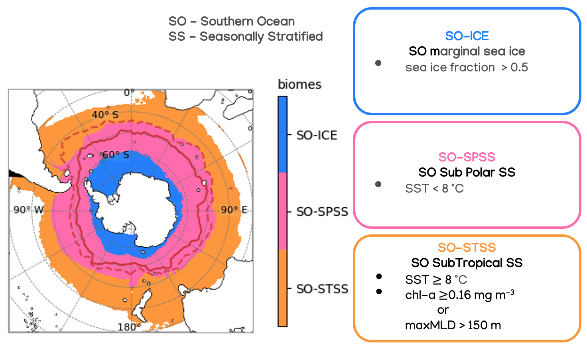
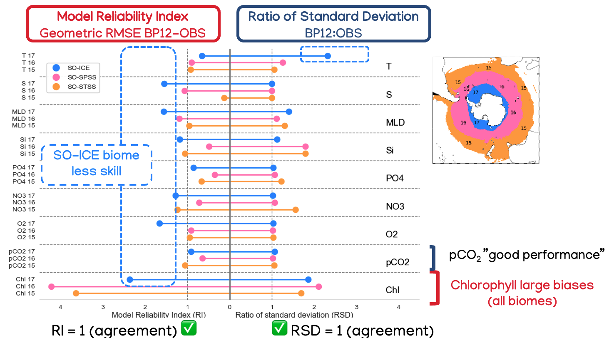
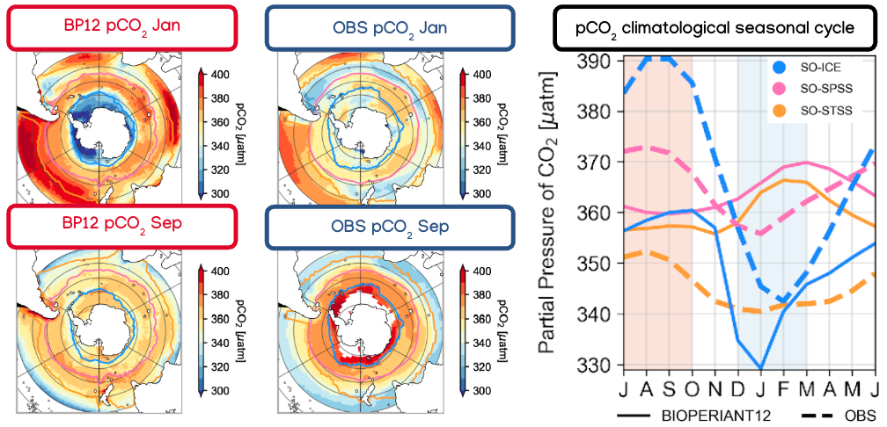

BIOPERIANT12

BIOPERIANT12 is a NEMO ocean-ice-biogeochemical model configuration developed to study the Southern Ocean ecosystem and its role in the global carbon cycle. The BIOPERIAThe model domain covers the Southern Ocean south of 30°S, with a horizontal resolution of approximately 8 km and 46 vertical levels.
The model description "BIOPERIANT12: a mesoscale-resolving coupled physics–biogeochemical model for the Southern Ocean" is available in the journal Geoscientific Model Development.
There are 4.8 million grid points for the ocean surface. To try and imagine the size and CPU power required to run this model, I tried to capture a mesoscale-resolving snapshot of SST by hand in yarn.
BIOPERIANT12 biomes

Biomes are regions defined by their physical and biological characteristics. The Southern Ocean biomes in the model are listed and defined based on the classification by Fay and McKinley (2014).
Fay, A. R. and McKinley, G. A.: Global open-ocean biomes: mean and temporal variability, Earth Syst. Sci. Data, 6, 273–284, https://doi.org/10.5194/essd-6-273-2014, 2014.
BIOPERIANT12 biome-mean statistics
Biome-mean statistics, such as mean and amplitude, were calculated for selected physical and biogeochemical variables for 10 years (paper Table 3).
{kind=link}

The biome-mean statistics, model reliability index (RI) and ratio of standard deviation (RSD) show how well the model represents the climatology compared to gridded datasets from observations.
Some of the stand out results which are discussed in the paper are:
- Less skill in the SO-ICE biome,
- Large model-observation biases in chlorophyll,
- False skill in the representation of pCO2.
pCO2 sneakiness

Although the model shows good skill in representing pCO2, the model-observation comparison and seasonal cycle for each biome show large biases.